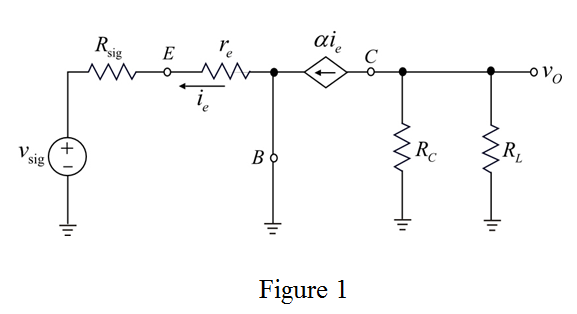

Step 1:
Refer to the Figure P6.100 in the text book.
Draw the small signal equivalent circuit as shown in Figure 1:

Step 2:
Determine the value of resistance between base and emitter:
Substitute 25 mV for and 0.5 mA for.
Determine the value of input resistance.
Using Figure 2, the input resistance is equal to the resistance between base and emitter.
Therefore, the value of input resistance, is.
is.
Step 3:
Determine the overall voltage gain:
Write the following expression using Figure 2.
Substitute 0.99 for  ,
,  for
for  and
and  for
for ,
,  for and
for and  for
for .
.
Therefore, the overall voltage gain, is.